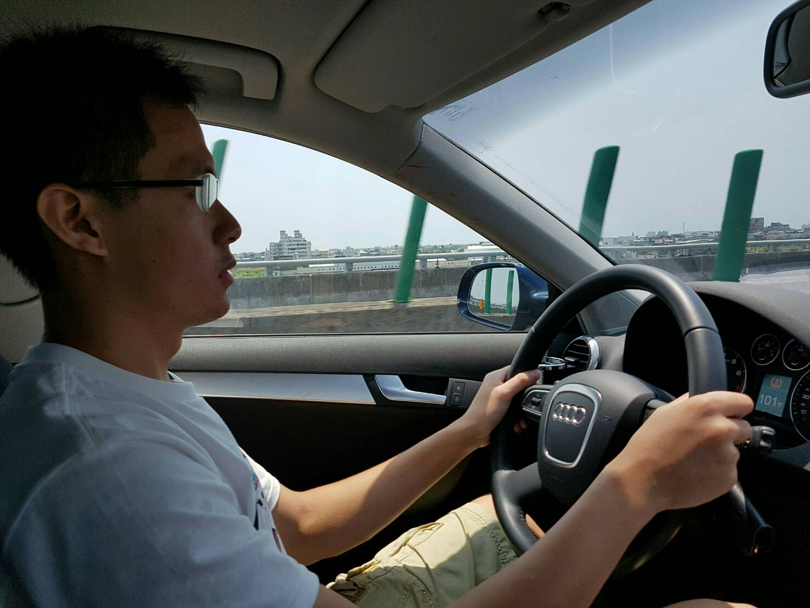

- FulungFestivalIntro
- Nangfanao
- Hostel
- Prepare a picnic cloth which can be laied on the beach and also bring some snacks and drinks with you so that you can eat and enjoy over there
- Arrive Furlung beach earlier because there are limited parking space
- The numbers of lockers nearby the restroom are limited,so I would suggest you leave most stuffs in your car
- Wear sunscream before you go to swim in case of getting suntane
- Please be notified Fulung beach close at 5 pm, if you want to have fun in the seaw, you had better arrive there earlier
- cellphone
- iPod
- digital
- camera
- protein bar
Hohaiyan,a phase in the English name coming from Amis, one of our aboriginal, represents the meaning "shut to the ocean." HO-HAI-YAN Gongliao Rock Festival, one of the most representative coastal events in Taiwan, which you may heard from your friends before, is held each year in July with the aim of providing enthusiastic youth a great place to go during summer vaction period.
So, if you are young at heart, Join Me For This Rock Festival
July 23 2016,Furlung Music Festival

It was a very beautiful day. At the beginning, i thought we may be stuck in a traffic jam since we set out in the late afternoon. Luckily,
it turned out that we worried too much, in fact, we arrived earlier than most other tourists. However,if you like to travel to Furlung next time, Here are some advices i would like to give you some advice.
July 24 2016, Nanfang ao in ILAN
My first day of the trip! I can't believe I finally got everything packed and ready to go. Because I'm on a Segway, I wasn't able to bring a whole lot with me:
All and all, it was a great memory, and i would like to thank Wu for the ride in these two days. The hostel was just as nice as it shows on the Booking.com, although it was a pity that we arrived the beach too late so that we didn't have enough time having fun in the sea. However, owning the mutual unforgettable travel experience has already been the best thing for me. after sharing you so many things with you,now stop sitting in front of your computer, it's you turn to plan a trip.